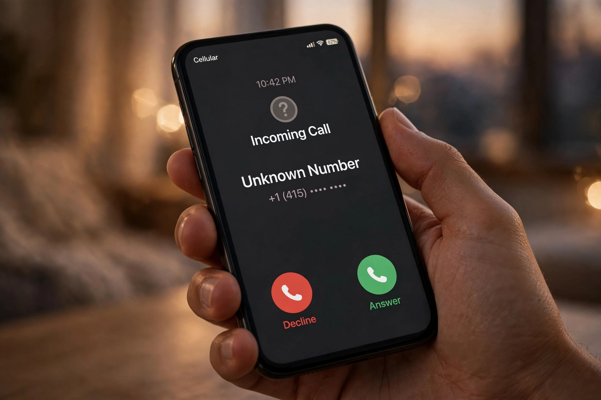

Nieodebrane połączenie z numeru, którego nie znasz, to dziś codzienność. Zanim oddzwonisz, warto sprawdzić, kto dzwonił — zwłaszcza że część takich numerów to telemarketing, a część to próby oszustwa. Na szczęście sprawdzenie numeru w internecie jest darmowe i zajmuje minutę. Ten poradnik pokazuje najskuteczniejsze sposoby, od wyszukiwarek numerów po bazy zgłoszeń użytkowników.
Najszybszy sposób to skorzystanie z wyszukiwarki numerów telefonów: wpisz pełny numer (z kierunkowym) i sprawdź, czy ktoś już go zgłosił. Jeśli numer był używany do spamu lub oszustw, zwykle znajdziesz komentarze innych użytkowników z datą i opisem rozmowy. Dobre narzędzie do sprawdzania nieznanego numeru pokazuje nie tylko to, czy numer jest zgłoszony, ale też jak często dzwonił i z jakim prefiksem. Jeśli numer nie pojawia się w żadnej bazie, nie znaczy to jeszcze, że jest bezpieczny — nowe numery spamowe pojawiają się codziennie.

Wpisz numer w cudzysłowie w Google, na przykład "48 123 456 789". Jeśli numer był zgłaszany na forach, w bazach numerów albo w ogłoszeniach, wyniki pokażą te strony. Warto też wpisać numer bez spacji i z różnymi formatami kierunkowego (+48, 0048). Firmy, które dzwonią legalnie, często mają numer widoczny na swojej stronie internetowej — jeśli numer należy do banku, kuriera albo urzędu, znajdziesz go w wynikach. Uważaj jednak: oszuści podszywają się pod znane firmy, więc sam fakt, że numer "wygląda" jak numer banku, to za mało — sprawdź też, czy bank faktycznie dzwoni z tego numeru.
Jeśli numer ma zgłoszenia o spamie albo oszustwie, nie oddzwaniaj i zablokuj go w telefonie. Jeśli odebrałeś i rozmówca prosi o kody BLIK, hasła, dane karty albo instalację aplikacji — rozłącz się natychmiast, żaden bank ani urząd tak nie działa. Podejrzany numer możesz zgłosić do UKE albo na policję, a zgłoszenie w bazie numerów pomoże innym. Zanim wyciągniesz wnioski, sprawdź też, co to za numer — czasem nieznany numer to po prostu kurier, przychodnia albo dawno niewidziany znajomy.
Nie oddzwaniaj od razu na numery zagraniczne o dziwnych prefiksach — połączenie może być drogie, a oszuści liczą na to, że oddzwonisz. Nie wysyłaj SMS-ów zwrotnych na numery premium. Nie podawaj przez telefon żadnych danych osobowych ani kodów z SMS-ów. I nie instaluj aplikacji na prośbę nieznanego rozmówcy, nawet jeśli twierdzi, że dzwoni z banku albo z "pomocy technicznej". Prawdziwy bank nigdy nie poprosi cię o instalację programu ani o podanie pełnego hasła.
Sprawdzenie nieznanego numeru w internecie zajmuje minutę, a może uchronić cię przed spamem, drogim połączeniem zwrotnym albo oszustwem. Wyszukiwarka numerów, szybkie sprawdzenie w Google i chwila namysłu przed oddzwonieniem — tyle wystarczy w większości przypadków.